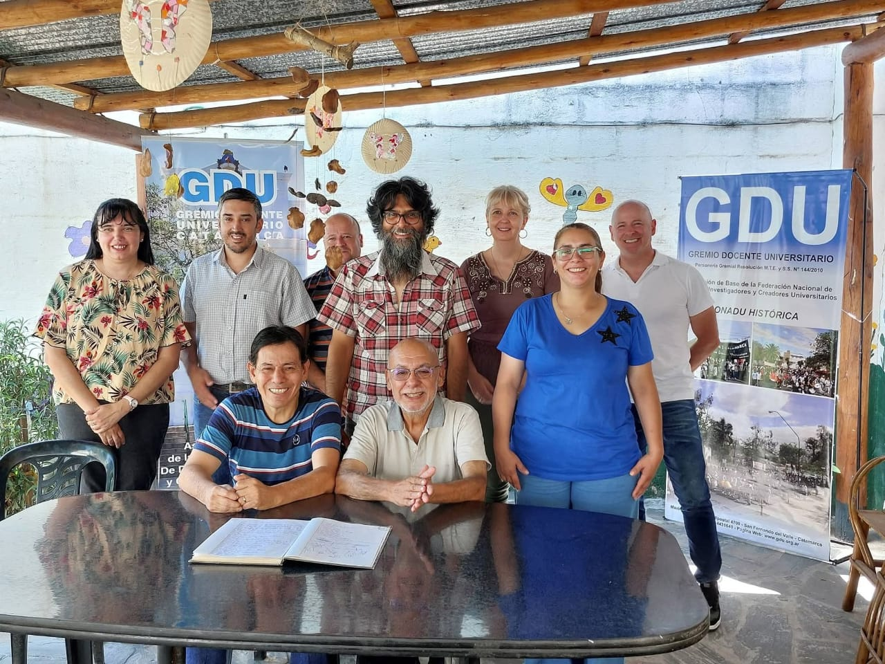

Autoridades GDU Catamarca
| Cargo | Apellidos y Nombres |
|---|---|
| Secretario General | MORALES MORALES, LUIS FERNANDO |
| Secretario Adjunto | VERA, JOSÉ ANTONIO |
| Secretario Gremial | MOLINA, MÓNICA LORENA |
| Secretario de Nivel Universitario | MOLINA, JOSE LUIS |
| Secretario de Nivel Preuniversitario | JURADO MARRÓN, FÁTIMA TERESITA |
| Secretario de Finanzas y Administración | RIZO, RODOLFO RAMÓN |
| Secretario de Prensa y Relaciones Institucionales | SARACHO, JAVIER HORACIO |
| Secretario de Actas | BERRONDO, PATRICIA GUADALUPE |
| Vocal 1º Suplente | HAMMANN, ARIADNA |
| Vocal 2º Suplente | ORTIZ, ERLINDA DEL VALLE |
| Cargo | Apellidos y Nombres |
|---|---|
| Miembros Titulares 1º | BARRIONUEVO QUIROGA, MARIANO A. |
| Miembros Titulares 2º | PEREYRA, NORA ELISA |
| Miembros Titulares 3º | TORRES ANDREATTA, JORGE GUILLERMO |
| Miembros Suplente 1º | DE LA FUENTE, GUILLERMO ADRIÁN |
| Miembros Suplente 2º | ROJAS CONTRERAS, ESTELA NOEMÍ |
| Miembros Suplente 3º | LÓPEZ, MÓNICA ALEJANDRA |
